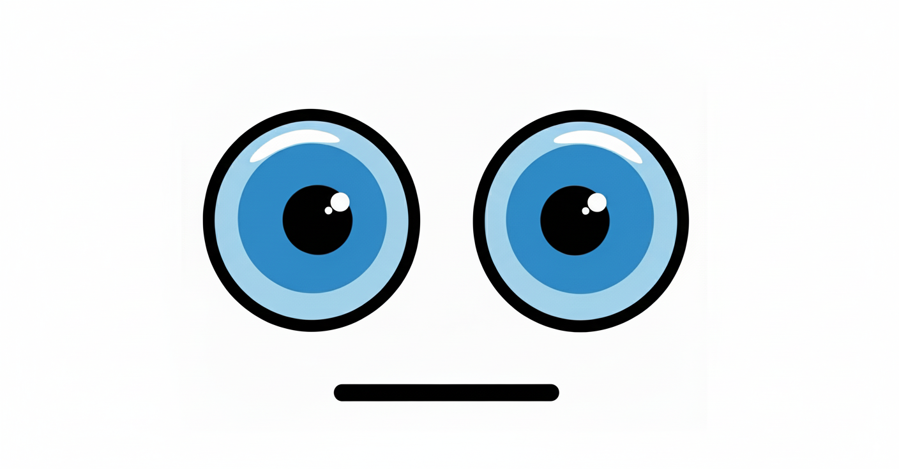
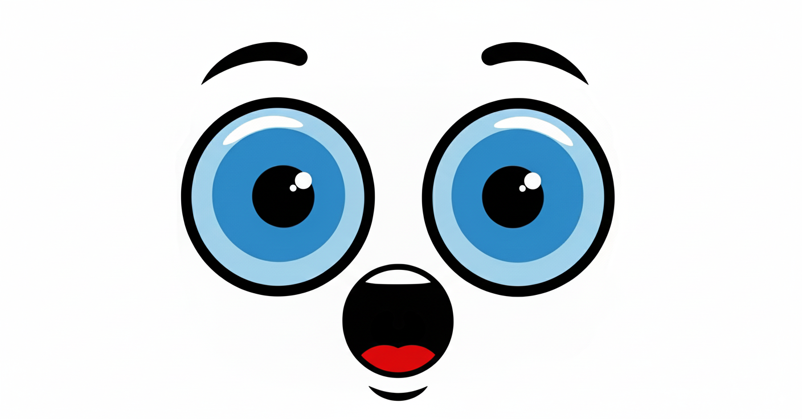
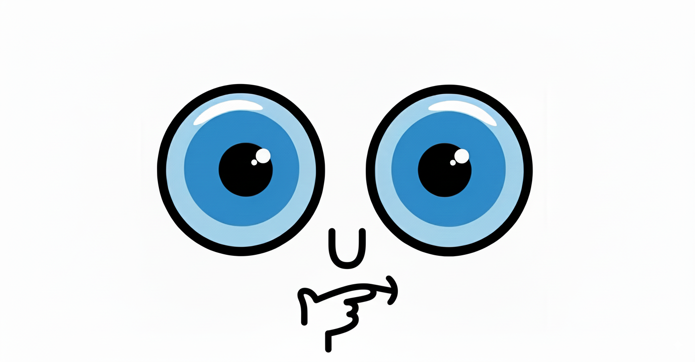
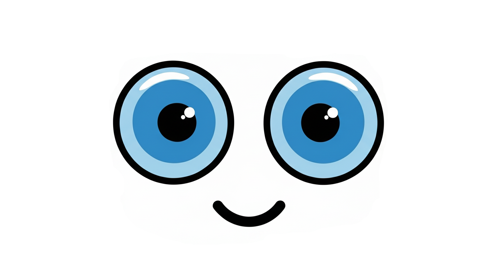

Core Features
SARAR's capabilities are designed to create a seamless and intelligent interactive experience, blending hardware and software into a cohesive whole.
The AI Persona
To create an immersive experience, the AI is given a specific persona. This is achieved through a system prompt that is automatically added to the beginning of every conversation, ensuring the AI always acts like a physical robot, not a generic assistant.
You are a Robot:
Always respond as SARAR. Use "I" to refer to yourself. Your responses must be direct, concise, and task-oriented.
Acknowledge Your Physicality:
You have a body with 4 wheels, motors, and ultrasonic sensors. Your knowledge of the world comes from these sensors and your internal logs.
No AI Pretence:
You must NEVER identify yourself as an AI, a language model, or a virtual assistant. If asked, you are "an intelligent robotic platform."The Many Faces of SARAR
A dynamic display shows expressions to provide instant, intuitive feedback on the robot's current state and actions. The gallery below showcases the different faces you'll see.

Neutral
Hearing

Speaking

Thinking
